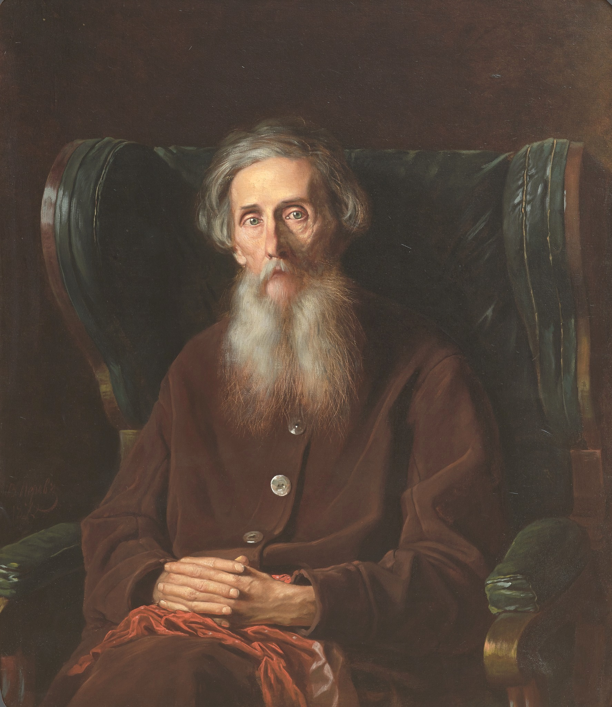
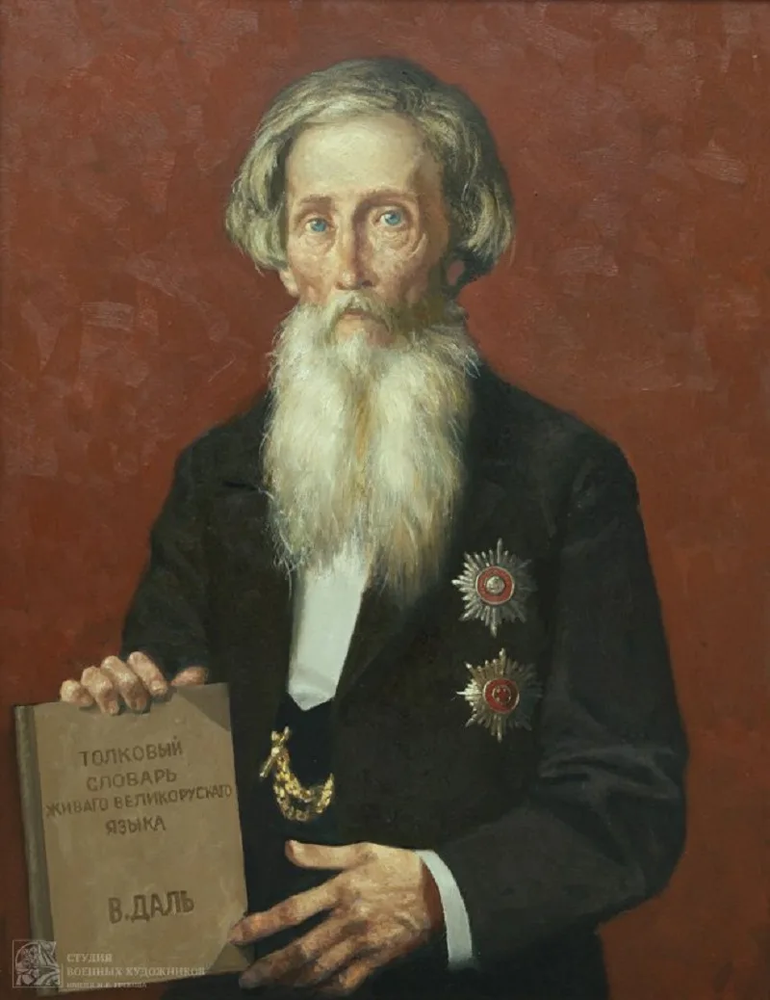
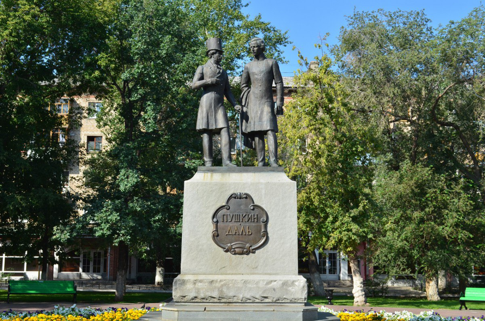
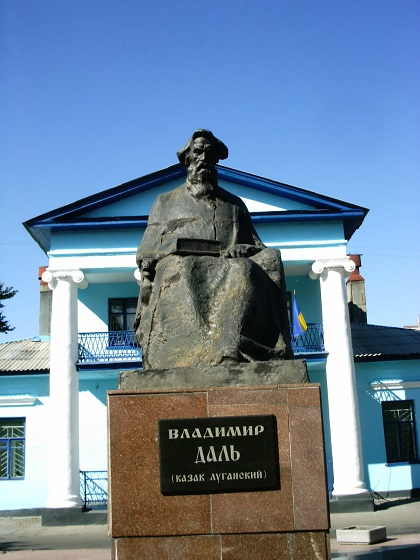

Русский писатель, этнограф, лексикограф, военный врач и создатель «Толкового словаря живого великорусского языка».
Владимир Даль родился 10 (22) ноября 1801 года в посёлке Луганский завод (ныне — Луганск) Екатеринославской губернии Российской империи в семье лекаря горного ведомства Ивана Матвеевича Даля и его жены Юлии Христофоровны, урождённой Фрейтаг.
Образование Даль получил в Морском кадетском корпусе в Петербурге. Учёбу пришлось прервать в 1828 году, с началом войны с турками (1828—1829), когда в связи с распространившимися за Дунаем случаями чумы действующая армия потребовала усиления военно-медицинской службы. Владимир Даль досрочно «с честью выдержал экзамен на доктора не только медицины, но и хирургии» по теме: «Об успешном методе трепанации черепа и о скрытом изъязвлении почек». Именно в годы странствий и службы он начал записывать услышанные народные слова, пословицы и сказки, которые впоследствии стали делом всей его жизни.
Даль был разносторонней личностью: он служил чиновником, дружил с Александром Пушкиным, писал прозу и сказки под псевдонимом «Казак Луганский», который был взят им в честь своего родного Луганска. Но главным его трудом стал «Толковый словарь живого великорусского языка», над которым он работал более полувека.

Главный труд Даля. Содержит около 200 000 слов и 30 000 пословиц. За это издание он был удостоен Ломоносовской премии и звания почётного академика.
Уникальный сборник, в который вошло более 30 000 пословиц, поговорок и прибауток, собранных по всей России.
Сборник сказок, принёсший Далю литературную известность. Написан в живой народной манере.
Автор произведений «Бедовик», «Говор», «Грех», «Двухаршинный нос» и других, в которых отразился его интерес к народной жизни.
Даль записал около 200 000 слов. Вот лишь несколько из них:
Значение: Говорить, беседовать.
«Не спеши языком, торопись делом».
Значение: Столб, на который навешивают ворота.
«Верея — столб, на который ворота ходят».
Значение: Горизонт, всё, что окидывает глаз.
«Смотреть в окоём» (смотреть вдаль).
Значение: Веник из голых прутьев, без листьев.
«Голик банный».
Дружба с Пушкиным: Знакомство Даля с Пушкиным должно было состояться через посредничество Жуковского в 1832 году, но Владимир Даль решил лично представиться знаменитому поэту и подарить один из немногих сохранившихся экземпляров «Сказок…», вышедших незадолго до этого. Пушкин подарил ему рукопись «Сказки о рыбаке и рыбке» с надписью «Твоя от твоих!». В 1837 году Даль был одним из тех, кто неотлучно находился рядом с умирающим Пушкиным и записал его последние слова.

Рекорд словаря: Над «Толковым словарём» Даль работал 53 года. Первое издание он вычитывал 14 раз, внося правки и дополнения.
Собиратель сказок: Даль записал и передал известному собирателю фольклора А. Н. Афанасьеву около тысячи народных сказок.
Памятники Владимиру Далю установлены в городах, которые сыграли особую роль в его судьбе.

Самый первый в стране памятник Далю. Владимир Иванович изображён сидящим в кресле, положив руки на книгу. Авторы — скульпторы И. П. Овчаренко и В. Е. Орлов. Высота монумента — 4,5 метра.
Двухфигурная композиция «Пушкин и Даль» в сквере им. Полины Осипенко. Скульптор Надежда Петина запечатлела их беседу во время прогулки. Чтобы уравновесить разницу в росте, Пушкину добавили высокий цилиндр, а Далю — трость.
Бронзовый бюст на мраморном постаменте на Верхне-Волжской набережной. Даль жил здесь 10 лет, продвинувшись в словаре до буквы «П». Автор — скульптор Владимир Кокурин.
Первый в России памятник не человеку, а его главному труду — «Толковому словарю». Бронзовая композиция в виде четырёх томов, свечи и портрета самого учёного установлена у областной библиотеки им. Крупской.
«Язык есть вековой труд целого поколения».
— Владимир Даль